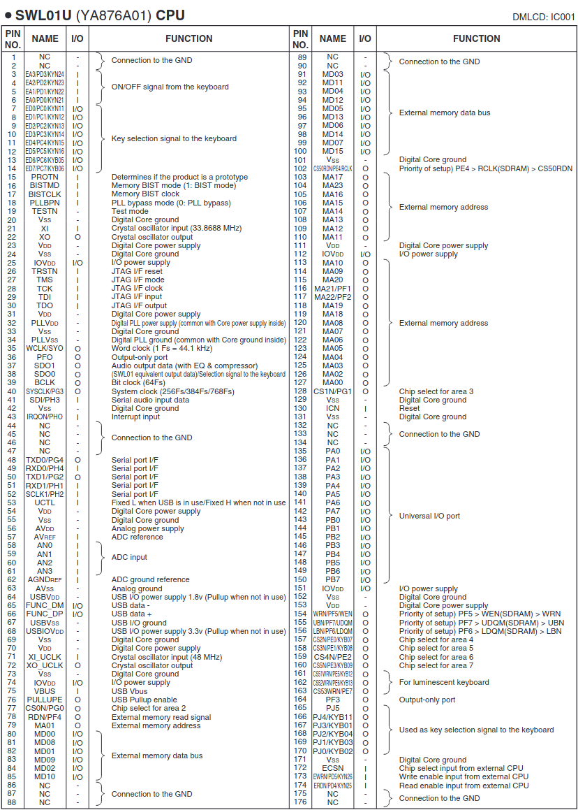

Согласно руководству по обслуживанию, в синтезаторе Yamaha-PSR-E433 используются следующие электронные компоненты:
REF № PART № DESCRIPTION REMARKS RANK
IC001 YA876A01 SWL01U CPU 05
* IC101 YE757C00 MX29GL128ELT2I-90G PSR-E433 FLASH ROM PROG./WAVE
* IC101 YE618C00 MX29GL128ELT2I-90G PSR-I455 FLASH ROM PROG./WAVE
IC102 X5896A00 SN74LVC1G08DCKR PSR-I455 AND 01
IC102 X5896B00 SN74LVC1G08DCKR 01
IC102 X6068A0R TC7SZ08FU PSR-I455 AND 01
IC102 YA350A00 74LVC1G08GW 01
IC111 X4374A0R S-80136ANMC-JCVT2G RESET 01
IC111 X5888A0R BD45365G 01
IC121 X3042D01 MX29LV160CBTC-70G PSR-E433 FLASH ROM 16M
IC121 X3042E00 MX29LV160DBTI-70G 03
IC121 X3042E00 MX29LV160DBTI-70G PSR-I455 FLASH ROM 16M 03
IC131 X2590C00 W9816G6IH-7 SDRAM SDRAM 16M 04
IC131 X5693C00 M12L16161A-7TG2K 04
IC131 X5693D00 M12L16161A-7TG2Q
IC201 X6040A01 AK4385ET DAC 03
IC202 YA326A00 BA4580RF-E2 OP AMP 01
* - New Parts
В интернете невозможно найти никакой информации или datasheet на процессор YA876A01. Нигде даже нет сведений о том, какая система команд в нем используется. По косвенной информации понятно, что это система-на-кристалле (SOC, system-on-crystall) со встроенным последовательным портом (COM), с USB-хостом, а так же на борту есть JTAG. Возможно, внутри есть DSP-процессор, так как есть ножка 37 (SDO1) именуемая Audio Output Data with EQ & Compressor.
Распределение ножек (пинов) процессора SWL01U YA876A01 приведено в следующей таблице:
